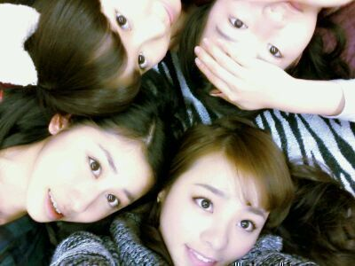

はぁ〜〜ぃ (〃∀〃)ノ
ろってぃ-です☆
日付変わっちゃったけど,
今日は 名古屋にて
個別握手会☆がありました(〃ω〃)
クリスマスシーズン
とゆぅことで
着ちゃったよ...(*´ω`*)
サンタさん♪。
ぢゃんっ ))
ツインテールに
巻髪だよん *^^*
初めてだったから
少し照れくさかったです(〃ω〃)/
にしても
めちゃ楽しかったぁ〜〜*´∀`*
なんかねえ〜
だんだんだんだんとねっ
皆様のことが
好きになって
ゆくんだよねぇ*〃ω〃*
...
キャッ ・∀・照 ))
昨日は まひろん家に
あみが泊まりに来て
まりかも泊まりに来て
まひろのベッドで
きちきちになって
寝たよぉ〜(*・ω・)
ポジ的には
まひろとまりかで
あみを挟む感じで ^^
そして今日はホテルで
せちゃんと同じお部屋だよん♪
ホテルに温泉があったから
乃木メンでいっぱいに
なっちゃったよ(>ω<))
急にまひろたちが
一気に入ってきて
人数多くて
他のお客さんびっくり
しちゃったかな´・∀・笑?
皆でワイワイ楽しかったよん♪
ぇえーっと
お風呂で撮った写メーー...
ないねっ ! ! !
当たり前かぁ〜(´∀`)/
うぃ〜
明日はっっ //
京都で 全国握手会です(*^^*)
今回は 初めてななみん♪とぉ〜
あ〜
嬉しいキモチ♪
ななみん好きやから(・∀・)
そろそろ寝なきゃっ >ω<
明日楽しみだなぁ〜 ´・ω・
皆様... おやすみなさい♪
まひろ、ちはる、ひめか、まりか。

大好きだよ...*・ω・